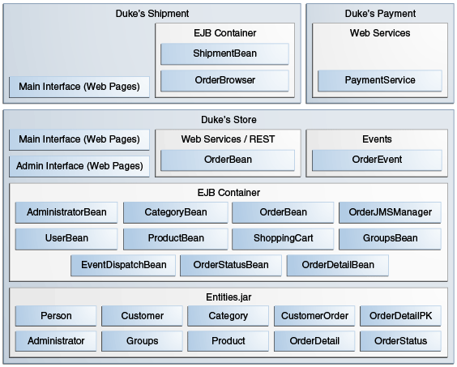
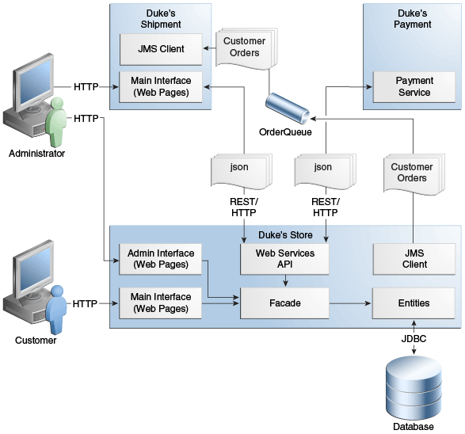
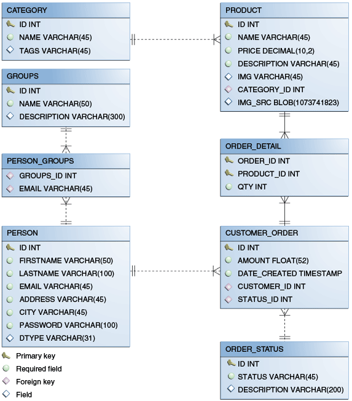

Duke’s Forest is a complex application consisting of three main projects
and three subprojects. Figure 62-1 shows the architecture
of the three main projects that you will deploy: Duke’s Store, Duke’s
Shipment, and Duke’s Payment. It also shows how Duke’s Store makes use
of the Events and Entities projects.
Figure 62-1 Architecture of the Duke’s Forest Example Application

Duke’s Forest uses the following Java EE 7 platform features:
-
Java Persistence API entities
-
Web services
-
Enterprise beans
-
Contexts and Dependency Injection (CDI)
-
CDI annotations for JavaServer Faces components
-
A CDI managed bean used as a shopping cart, with conversation scoping
-
Qualifiers
-
Events and event handlers
-
Servlets
-
JavaServer Faces technology, using Facelets for the web front end
-
Security
-
Java EE security constraints on the administrative interface business
methods (enterprise beans)
-
Security constraints for customers and administrators (web
components)
-
Single Sign-On (SSO) to propagate an authenticated user identity from
Duke’s Store to Duke’s Shipment
The Duke’s Forest application has two main user interfaces, both
packaged within the Duke’s Store WAR file:
-
The main interface, for customers and guests
-
The administrative interface used to perform back office operations,
such as adding new items to the catalog
The Duke’s Shipment application also has a user interface, accessible to
administrators.
Figure 62-2 shows how the web applications and the web
service interact.
Figure 62-2 Interactions between Duke’s Forest Components

As illustrated in Figure 62-2, the customer interacts
with the main interface of Duke’s Store, while the administrator
interacts with the administration interface. Both interfaces access a
façade consisting of managed beans and stateless session beans, which in
turn interact with the entities that represent database tables. The
façade also interacts with web services APIs that access the Duke’s
Payment web service. When the payment for an order is approved, Duke’s
Store sends the order to a JMS queue. The administrator also interacts
with the interface of Duke’s Shipment, which can be accessed either
directly through Duke’s Shipment or from the administration interface of
Duke’s Store by means of a web service. When the administrator approves
an order for shipping, Duke’s Shipment consumes the order from the JMS
queue.
The most fundamental building blocks of the application are the Events
and Entities projects, which are bundled into Duke’s Store and Duke’s
Shipment along with the Duke’s Resources project.
The events Project
Events are one of the core components of Duke’s Forest. The events
project, included in all three of the main projects, is the most simple
project of the application. It has only one class, OrderEvent, but
this class is responsible for most of the messages between objects in
the application.
The application can send messages based on events to different
components and react to them based on the qualification of the event.
The application supports the following qualifiers:
-
@LoggedIn: For authenticated users
-
@New: When a new order is created by the shopping cart
-
@Paid: When an order is paid for and ready for shipment
The following code snippet from the PaymentHandler class of Duke’s
Store shows how the @Paid event is handled:
@Inject @Paid Event<OrderEvent> eventManager;
...
public void onNewOrder(@Observes @New OrderEvent event) {
if (processPayment(event)) {
orderBean.setOrderStatus(event.getOrderID(),
String.valueOf(OrderBean.Status.PENDING_PAYMENT.getStatus()));
logger.info("Payment Approved");
eventManager.fire(event);
} else {
orderBean.setOrderStatus(event.getOrderID(),
String.valueOf(OrderBean.Status.CANCELLED_PAYMENT.getStatus()));
logger.info("Payment Denied");
}
}
To enable users to add more events to the project easily or update an
event class with more fields for a new client, this component is a
separate project within the application.
The entities Project
The entities project is a Java Persistence API (JPA) project used by
both Duke’s Store and Duke’s Shipment. It is generated from the database
schema shown in Figure 62-3 and is also used as a base for
the entities consumed and produced by the web services through JAXB.
Each entity has validation rules based on business requirements,
specified using Bean Validation.
Figure 62-3 Duke’s Forest Database Tables and Their Relationships

The database schema contains eight tables:
-
PERSON, which has a one-to-many relationship with PERSON_GROUPS
and CUSTOMER_ORDER
-
GROUPS, which has a one-to-many relationship with PERSON_GROUPS
-
PERSON_GROUPS, which has a many-to-one relationship with PERSON
and GROUPS (it is the join table between those two tables)
-
PRODUCT, which has a many-to-one relationship with CATEGORY and a
one-to-many relationship with ORDER_DETAIL
-
CATEGORY, which has a one-to-many relationship with PRODUCT
-
CUSTOMER_ORDER, which has a one-to-many relationship with
ORDER_DETAIL and a many-to-one relationship with PERSON and
ORDER_STATUS
-
ORDER_DETAIL, which has a many-to-one relationship with PRODUCT
and CUSTOMER_ORDER (it is the join table between those two tables)
-
ORDER_STATUS, which has a one-to-many relationship with
CUSTOMER_ORDER
The entity classes that correspond to these tables are as follows.
-
Person, which defines attributes common to customers and
administrators. These attributes are the person’s name and contact
information, including street and email addresses. The email address has
a Bean Validation annotation to ensure that the submitted data is
well-formed. The generated table for the Person entity also has a
DTYPE field that represents the discriminator column. Its value
identifies the subclass (Customer or Administrator) to which the
person belongs.
-
Customer, a specialization of Person with a specific field for
CustomerOrder objects.
-
Administrator, a specialization of Person with fields for
administration privileges.
-
Groups, which represents the group (USERS or ADMINS) to which
the user belongs.
-
Product, which defines attributes for products. These attributes
include name, price, description, associated image, and category.
-
Category, which defines attributes for product categories. These
attributes include a name and a set of tags.
-
CustomerOrder, which defines attributes for orders placed by
customers. These attributes include an amount and a date, along with id
values for the customer and the order detail.
-
OrderDetail, which defines attributes for the order detail. These
attributes include a quantity and id values for the product and the
customer.
-
OrderStatus, which defines a status attribute for each order.
The dukes-payment Project
The dukes-payment project is a web project that holds a simple Payment
web service. Since this is an example application, it does not obtain
any real credit information or even customer status to validate the
payment. For now, the only rule imposed by the payment system is to deny
all orders above $1,000. This application illustrates a common scenario
where a third-party payment service is used to validate credit cards or
bank payments.
The project uses HTTP Basic Authentication and JAAS (Java Authentication
and Authorization Service) to authenticate a customer to a JAX-RS web
service. The implementation itself exposes a simple method,
processPayment, which receives an OrderEvent to evaluate and approve
or deny the order payment. The method is called from the checkout
process of Duke’s Store.
The dukes-resources Project
The dukes-resources project contains a number of files used by both
Duke’s Store and Duke’s Shipment, bundled into a JAR file placed in the
classpath. The resources are in the src/main/resources directory:
-
META-INF/resources/css: Two style sheets, default.css and
jsfcrud.css
-
META-INF/resources/img: Images used by the projects
-
META-INF/resources/js: A JavaScript file, util.js
-
META-INF/resources/util: Composite components used by the projects
-
bundles/Bundle.properties: Application messages in English
-
bundles/Bundle_es.properties: Application messages in Spanish
-
ValidationMessages.properties: Bean Validation messages in English
-
ValidationMessages_es.properties: Bean Validation messages in
Spanish
The Duke’s Store Project
Duke’s Store, a web application, is the core application of Duke’s
Forest. It is responsible for the main store interface for customers as
well as the administration interface.
The main interface of Duke’s Store allows the user to perform the
following tasks:
-
Browsing the product catalog
-
Signing up as a new customer
-
Adding products to the shopping cart
-
Checking out
-
Viewing order status
The administration interface of Duke’s Store allows administrators to
perform the following tasks:
-
Product maintenance (create, edit, update, delete)
-
Category maintenance (create, edit, update, delete)
-
Customer maintenance (create, edit, update, delete)
-
Group maintenance (create, edit, update, delete)
The project also uses stateless session beans as façades for
interactions with the JPA entities described in The
entities Project, and CDI managed beans as controllers for interactions
with Facelets pages. The project thus follows the MVC
(Model-View-Controller) pattern and applies the same pattern to all
entities and pages, as in the following example.
-
AbstractFacade is an abstract class that receives a Type<T> and
implements the common operations (CRUD) for this type, where <T> is a
JPA entity.
-
ProductBean is a stateless session bean that extends
AbstractFacade, applying Product as Type<T>, and injects the
PersistenceContext for the EntityManager. This bean implements any
custom methods needed to interact with the Product entity or to call a
custom query.
-
ProductController is a CDI managed bean that interacts with the
necessary enterprise beans and Facelets pages to control the way the
data will be displayed.
ProductBean begins as follows:
@Stateless
public class ProductBean extends AbstractFacade<Product> {
private static final Logger logger =
Logger.getLogger(ProductBean.class.getCanonicalName());
@PersistenceContext(unitName="forestPU")
private EntityManager em;
@Override
protected EntityManager getEntityManager() {
return em;
}
...
Enterprise Beans Used in Duke’s Store
The enterprise beans used in Duke’s Store provide the business logic for
the application and are located in the com.forest.ejb package. All are
stateless session beans.
AbstractFacade is not an enterprise bean but an abstract class that
implements common operations for Type<T>, where <T> is a JPA entity.
Most of the other beans extend AbstractFacade, inject the
PersistenceContext, and implement any needed custom methods:
-
AdministratorBean
-
CategoryBean
-
EventDispatcherBean
-
GroupsBean
-
OrderBean
-
OrderDetailBean
-
OrderJMSManager
-
OrderStatusBean
-
ProductBean
-
ShoppingCart
-
UserBean
The ShoppingCart class, although it is in the ejb package, is a CDI
managed bean with conversation scope, which means that the request
information will persist across multiple requests. Also, ShoppingCart
is responsible for starting the event chain for customer orders, which
invokes the RESTful web service in dukes-payment and publishes an
order to the JMS queue for shipping approval if the payment is
successful.
Facelets Files Used in the Main Interface of Duke’s Store
Like the other case study examples, Duke’s Store uses Facelets to
display the user interface. The main interface uses a large number of
Facelets pages to display different areas. The pages are grouped into
directories based on which module they handle.
-
template.xhtml: Template file, used for both main and administration
interfaces. It first performs a browser check to verify that the user’s
browser supports HTML 5, which is required for Duke’s Forest. It divides
the screen into several areas and specifies the client page for each
area.
-
topbar.xhtml: Page for the login area at the top of the screen.
-
top.xhtml: Page for the title area.
-
left.xhtml: Page for the left sidebar.
-
index.xhtml: Page for the main screen content.
-
login.xhtml: Login page specified in web.xml. The main login
interface is provided in topbar.xhtml, but this page appears if there
is a login error.
-
admin directory: Pages related to the administration interface,
described in Facelets Files Used in the Administration
Interface of Duke’s Store.
-
customer directory: Pages related to customers (Create.xhtml,
Edit.xhtml, List.xhtml, Profile.xhtml, View.xhtml).
-
order directory: Pages related to orders (Create.xhtml,
List.xhtml, MyOrders.xhtml, View.xhtml).
-
orderDetail directory: Popup page allowing users to view details of
an order (View_popup.xhtml).
-
product directory: Pages related to products (List.xhtml,
ListCategory.xhtml, View.xhtml).
Facelets Files Used in the Administration Interface of Duke’s Store
The Facelets pages for the administration interface of Duke’s Store are
found in the web/admin directory:
-
administrator directory: Pages related to administrator management
(Create.xhtml, Edit.xhtml, List.xhtm`l, `View.xhtml)
-
category directory: Pages related to product category management
(Create.xhtml, Edit.xhtml, List.xhtml, View.xhtml)
-
customer directory: Pages related to customer management
(Create.xhtml, Edit.xhtml, List.xhtml, Profile.xhtml,
View.xhtml)
-
groups directory: Pages related to group management (Create.xhtml,
Edit.xhtml, List.xhtml, View.xhtml)
-
order directory: Pages related to order management (Create.xhtml,
Edit.xhtml, List.xhtml, View.xhtml)
-
orderDetail directory: Popup page allowing the administrator to view
details of an order (View_popup.xhtml)
-
product directory: Pages related to product management
(Confirm.xhtm`l, `Create.xhtml, Edit.xhtml, List.xhtml,
View.xhtml)
Managed Beans Used in Duke’s Store
Duke’s Store uses the following CDI managed beans, which correspond to
the enterprise beans. The beans are in the com.forest.web package:
-
AdministratorController
-
CategoryController
-
CustomerController
-
CustomerOrderController
-
GroupsController
-
OrderDetailController
-
OrderStatusController
-
ProductController
-
UserController
Helper Classes Used in Duke’s Store
The CDI managed beans in the main interface of Duke’s Store use the
following helper classes, found in the com.forest.web.util package:
-
AbstractPaginationHelper: An abstract class with methods used by the
managed beans
-
ImageServlet: A servlet class that retrieves the image content from
the database and displays it
-
JsfUtil: Class used for JavaServer Faces operations, such as queuing
messages on a FacesContext instance
-
MD5Util: Class used by the CustomerController managed bean to
generate an encrypted password for a user
Qualifiers Used in Duke’s Store
Duke’s Store defines the following qualifiers in the
com.forest.qualifiers package:
-
@LoggedIn: Qualifies a user as having logged in
-
@New: Qualifies an order as new
-
@Paid: Qualifies an order as paid
Event Handlers Used in Duke’s Store
Duke’s Store defines event handlers related to the OrderEvent class
packaged in the events project (see The events
Project). The event handlers are in the com.forest.handlers package.
-
IOrderHandler: The IOrderHandler interface defines a method,
onNewOrder, implemented by the two handler classes.
-
PaymentHandler: The ShoppingCart bean fires an OrderEvent
qualified as @New. The onNewOrder method of PaymentHandler
observes these events and, when it intercepts them, processes the
payment using the Duke’s Payment web service. After a successful
response from the web service, PaymentHandler fires the OrderEvent
again, this time qualified as @Paid.
-
DeliveryHandler: The onNewOrder method of DeliveryHandler
observes OrderEvent objects qualified as @Paid (orders paid and
ready for delivery) and modifies the order status to PENDING_SHIPMENT.
When an administrator accesses Duke’s Shipment, it will call the Order
Service, a RESTful web service, and ask for all orders in the database
that are ready for delivery.
Deployment Descriptors Used in Duke’s Store
Duke’s Store uses the following deployment descriptors, located in the
web/WEB-INF directory:
-
faces-config.xml: The JavaServer Faces configuration file
-
glassfish-web.xml: The configuration file specific to GlassFish
Server
-
web.xml: The web application configuration file
The Duke’s Shipment Project
Duke’s Shipment is a web application with a login page, a main Facelets
page, and some other objects. This application, which is accessible only
to administrators, consumes orders from a JMS queue and calls the
RESTful web service exposed by Duke’s Store to update the order status.
The main page of Duke’s Shipment shows a list of orders pending shipping
approval and a list of shipped orders. The administrator can approve or
deny orders for shipping. If approved, the order is shipped, and it
appears under the Shipped heading. If denied, the order disappears from
the page, and on the customer’s Orders list it appears as cancelled.
There is also a gear icon on the Pending list that makes an Ajax call to
the Order Service to refresh the list without refreshing the page. The
code looks like this:
<h:commandLink>
<h:graphicImage library="img" title="Check for new orders"
style="border:0px" name="refresh.png"/>
<f:ajax execute="@form" render="@form" />
</h:commandLink>
Enterprise Beans Used in Duke’s Shipment
The UserBean stateless session bean used in Duke’s Shipment provides
the business logic for the application and is located in the
com.forest.shipment.session package.
Like Duke’s Store, Duke’s Shipment uses the AbstractFacade class. This
class is not an enterprise bean but an abstract class that implements
common operations for Type<T>, where <T> is a JPA entity.
The OrderBrowser stateless session bean, located in the
com.forest.shipment.ejb package, has one method that browses the JMS
order queue and another that consumes an order message after the
administrator approves or denies the order for shipment.
Facelets Files Used in Duke’s Shipment
Duke’s Shipment has only one page, so it has many fewer Facelets files
than Duke’s Store.
-
template.xhtml: The template file, like the one in Duke’s Store,
first performs a browser check to verify that the user’s browser
supports HTML 5, which is required for Duke’s Forest. It divides the
screen into areas and specifies the client page for each area.
-
topbar.xhtml: Page for the login area at the top of the screen.
-
top.xhtml: Page for the title area.
-
index.xhtml: Page for the initial main screen content.
-
login.xhtml: Login page specified in web.xml. The main login
interface is provided in topbar.xhtml, but this page appears if there
is a login error.
-
admin/index.xhtml: Page for the main screen content after
authentication.
Managed Beans Used in Duke’s Shipment
Duke’s Shipment uses the following CDI managed beans, in the
com.forest.shipment package:
Helper Class Used in Duke’s Shipment
The Duke’s Shipment managed beans use only one helper class, found in
the com.forest.shipment.web.util package:
Qualifier Used in Duke’s Shipment
Deployment Descriptors Used in Duke’s Shipment
Duke’s Shipment uses the following deployment descriptors:
-
faces-config.xml: The JavaServer Faces configuration file
-
glassfish-web.xml: The configuration file specific to GlassFish
Server
-
web.xml: The web application configuration file
 Copyright © 2017, Oracle and/or its affiliates. All rights reserved.
Copyright © 2017, Oracle and/or its affiliates. All rights reserved.